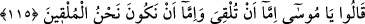
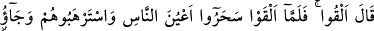
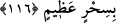
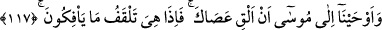

115. (Sihirbazlar), Ey Musa sen mi (önce) atacaksın, yoksa atanlar biz mi olalım?
dediler.
Sihirbazlar “dediler ki: “Ey Mûsâ,” önce asânı “sen mi atacaksın yoksa” iplerimizi
ve asâlarımızı önce “atanlar biz mi olalım?” Mûsâ (a.s.)’ı bu konuda muhayyer
bırakdılar.
Müfessirler demişlerdir ki: Sihirbazlar, Mûsâ (a.s.)’a karşı edebli davrandılar. İşte bu
edeb, onların iman etmelerine sebep oldu.
116. “Siz atın” dedi. Onlar atınca, insanların gözlerini büyülediler, onları
korkuttular ve büyük bir sihir gösterdiler.
“Siz atın.” yani, siz ne atacaksanız atın. “dedi.”
“Sihir yapmayı emretmek caiz olmadığı halde Mûsâ (a.s.) büyücülere nasıl “Siz atın.”
demiştir?” diye sorulacak olursa, buna cevaben deriz ki: Mûsâ (a.s.), bunu şu iki
ihtimalden biri sebebiyle söylemiştir: Birincisi, büyücülerin zanlarında haklı olup
olmadıklarını kendilerine göstermek için. İkincisi, kendi mucizesini te’kid için.
Kadı Beydâvî demiştir ki: Mûsâ (a.s.), kendi işine güvendiği için onların işini de
hafife almak, bir müsamaha ve ikram olmak üzere onlara “Siz atın.” dedi. Yoksa bu,
sihri mübah saymak ve küfre rıza göstermek kabilinden değildir.
“Onlar” atacakları şeyleri “atınca, insanların gözlerini büyülediler.” hakikati
olmayan bazı hayalleri göstererek insanların gözlerini büyülediler.
Şeyhzâde demiştir ki: Onlar bir kısım karışıklıklar yapmak suretiyle insanların
gözlerini, olayı olduğu şekilde görüp anlamaktan çevirdiler, başka tarafa yönlendirdiler.
“Onları korkuttular ve büyük bir sihir meydana getirdiler.”
Rivayet edilir ki büyücüler, kalın kalın ipler ve uzun uzun odunlar topladılar. Bunlar
kalın ve büyük yılanlara benziyordu. Topladıkları iplere civa sürdüler. Asâların içine
de yine civa doldurdular. Üzerlerine güneşin harareti düşünce onlar hareket etti ve
eğilip bükülerek birbirine girdi. Sayıları çok fazlaydı. İnsanlar onların kendiliklerinden
hareket ederek eğilip büküldüklerini sandılar. Sanki meydan yılanlarla dolu gibiydi.